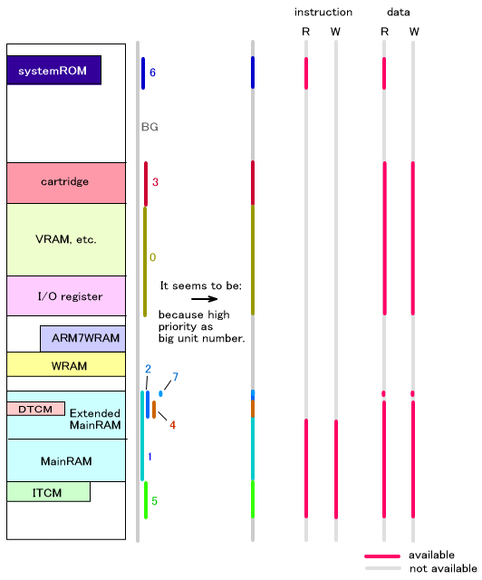
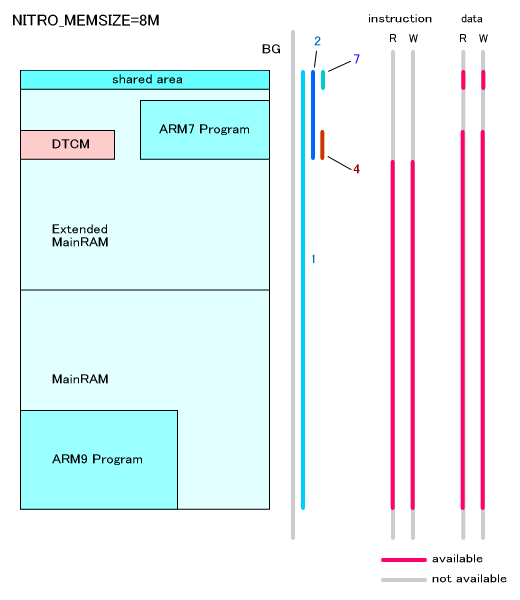
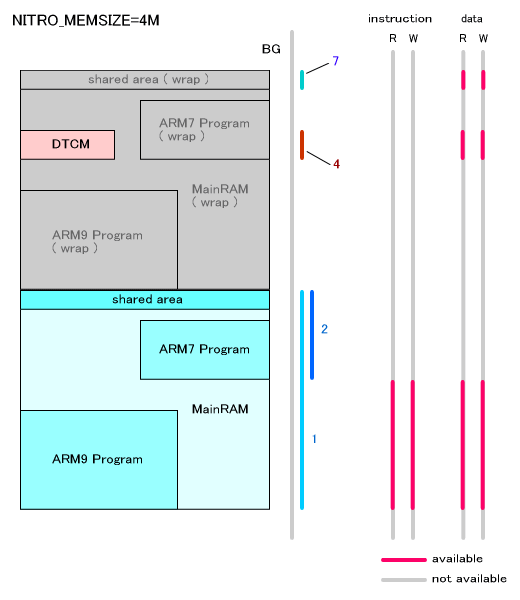

プロテクションユニットは、メモリのリード／ライト属性やキャッシュ／ライトバックの使用の有無を設定してメモリを保護するための機能です。8つのリージョンをメモリ空間にマッピングすることが可能で、それぞれに異なった属性を設定することができます。
プロテクションユニットは ARM9 プロセッサでのみ使用可能です。
プロテクションユニットのイネーブル・ディセーブル
以下の関数で、プロテクションユニット自体をイネーブル、ディセーブルとすることが出来ます。
OS_EnableProtectionUnit()
OS_DisableProtectionUnit()
各リージョンの設定
各プロテクションリージョンの設定を行なうための関数は以下の通りです。
OS_SetProtectionRegion()
OS_SetProtectionRegionParam()
設定を取得するための関数は以下の通りです。
OS_GetProtectionRegionAddress()
OS_GetProtectionRegionSize()
OS_GetProtectionRegionParam()
デフォルトのマッピング
デフォルトでは各リージョンは以下のようにマッピングされています。
リージョンが重なっている場合、リージョン番号の大きい方が優先されます。
| リージョン番号 | 用途 | ベースアドレス | サイズ | キャッシュ | ライトバッファ | ユーザ属性(命令) | ユーザ属性(データ) |
|---|---|---|---|---|---|---|---|
| - | バックグラウンド | 0x00000000 | 4GByte ( 0x100000000 ) |
× | × | NA | NA |
| 0 | I/Oレジスタ, VRAM等 | HW_IOREG ( 0x04000000 ) |
64MByte ( 0x4000000 ) |
× | × | R/W | R/W |
| 1 | メインメモリ | HW_MAIN_MEM_MAIN ( 0x02000000 ) |
4M / 8MByte (注1) ( 0x400000/0x800000 ) |
○ | ○ | R/W | R/W |
| 2 | ARM7専用 | HW_MAIN_MEM_MAIN_END/HW_MAIN_MEM_SUB ( 0x23E0000/0x27E0000 ) (注2) |
128KByte ( 0x20000 ) |
× | × | NA | NA |
| 3 | カートリッジ | HW_CTRDG_ROM ( 0x08000000 ) |
128MByte ( 0x8000000 ) |
× | × | NA | R/W |
| 4 | DTCM | HW_DTCM ( 0x027E0000 ) (注3) |
16KByte ( 0x4000 ) |
× | × | NA | R/W |
| 5 | ITCM | HW_ITCM_IMAGE ( 0x01000000 ) (注4) |
16MByte ( 0x1000000 ) |
× | × | R/W | R/W |
| 6 | BIOS予約 | HW_BIOS ( 0xFFFF0000 ) |
32KByte ( 0x8000 ) |
○ | × | R | R |
| 7 | 共有メインメモリ | HW_MAIN_MEM_SHARED ( 0x027FF000 ) |
4KByte ( 0x1000 ) |
× | × | NA | R/W |
(注1)
メインメモリの保護を用途とするプロテクションリージョン1 のサイズは、デバッガ上で動作させる場合は、OS_EnableMainExArena() を OS_InitArena() や OS_Init() の前に指定することで 8MByte となります。実機の場合は上記の設定に依らず常に
4MByte となります。
以前のバージョンとの互換性のために、上記の指定の替わりに、OS ライブラリを NITRO_MEMSIZE=8M を指定してコンパイルすれば、プロテクションリージョン1 のサイズは 8MByte となります ( デバッガ上で動作させる場合 )。
(注2)
ARM7 専用領域を保護するプロテクションリージョン2 の開始アドレスは、プロテクションリージョン1 のサイズが 4MByte の場合に 0x23E0000 、8MByte の場合に 0x27E0000 となります。
(注3)
DTCM の開始位置は lsf ファイルで指定されています。0x027E0000 はデフォルトの値です。
(注4)
NULL ポインタへのアクセスで例外を発生させるためにあえて 0x00000000 からにしていません。
(注)
TEG の場合、プロテクションリージョン2 の開始アドレス HW_MAIN_MEM_SUB は
0x2780000、サイズは 512KByte となります。DTCM の開始位置はデフォルトで
0x02780000 となり、プロテクションリージョン 4 の開始アドレスは 0x0280000
となります
これを図で表すと次のようになります。

さらにメインメモリと拡張メインメモリの領域部分を拡大したものが下の図です。 この部分のデフォルトのリージョン設定はメインメモリのサイズ設定が8MByteの場合と4MByteの場合とで切り替わるようになっています。

2006/05/12 デフォルトのマッピング表の修正
2005/04/13 ARM7専用・DTCMリージョンのアドレスを変更
2004/12/14 用語や語尾など修正
2004/11/17 初版